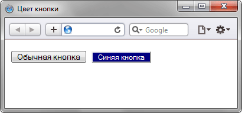

Задача
Задать цвет фона кнопки и цвет текста на ней.
Решение
Оформление кнопки зависит от параметров операционной системы и выбранного браузера. Поэтому одна и та же кнопка может различаться по своему виду в браузере Internet Explorer и Opera. Применение стилевого свойства background не только изменяет цвет фона у кнопки, но также меняет и ее вид, делая кнопку одинаковой в разных браузерах (пример 1).
Пример 1. Цвет кнопки
HTML5CSS 2.1IECrOpSaFx
<!DOCTYPE html>
<html>
<head>
<metacharset=utf-8">
<title>Цвет кнопки</title>
<style>
.b1 {
background: navy; /* Синий цвет фона */
color: white; /* Белые буквы */
font-size: 9pt; /* Размер шрифта в пунктах */
}
</style>
</head>
<body>
<form action="handler.php">
<p><input type="button" value="Обычная кнопка">
<input type="button" class="b1" value="Синяя кнопка"></p>
</form>
</body>
</html>
Результат примера показан на рис. 1.

Рис. 1. Вид обычной и цветной кнопки в браузере Safari